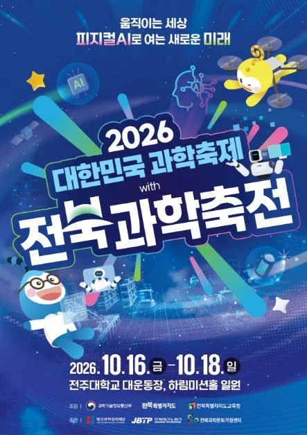
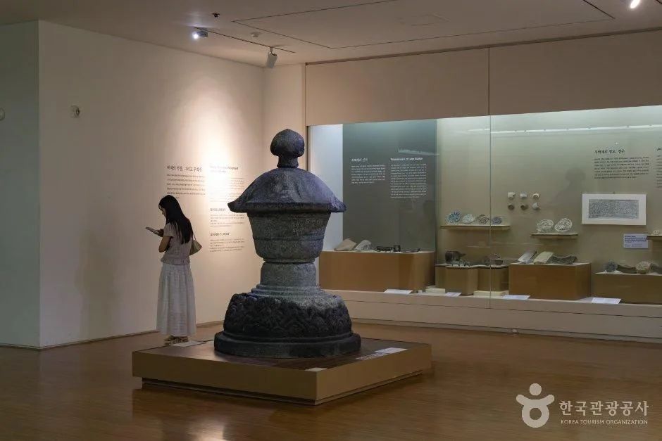
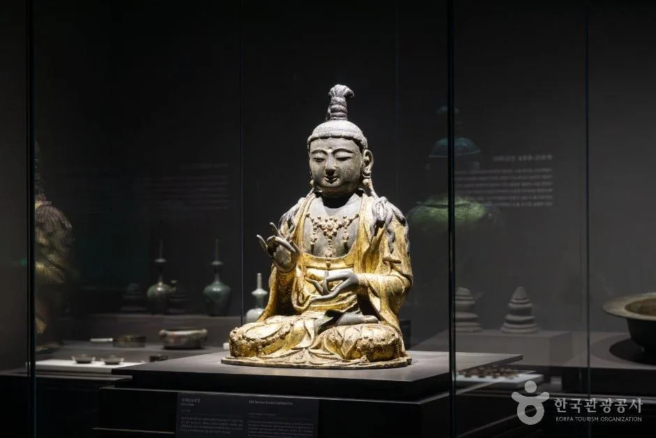
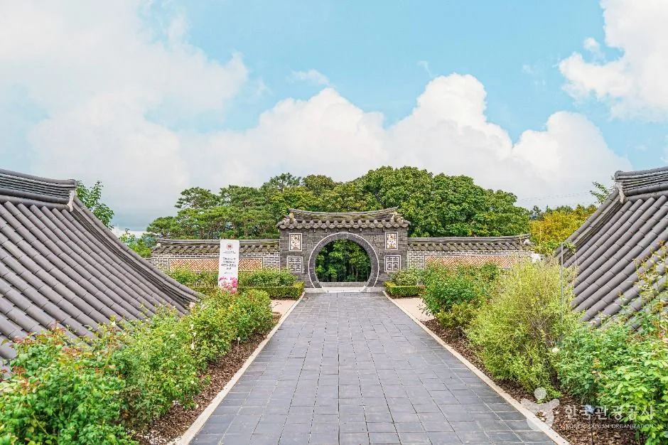
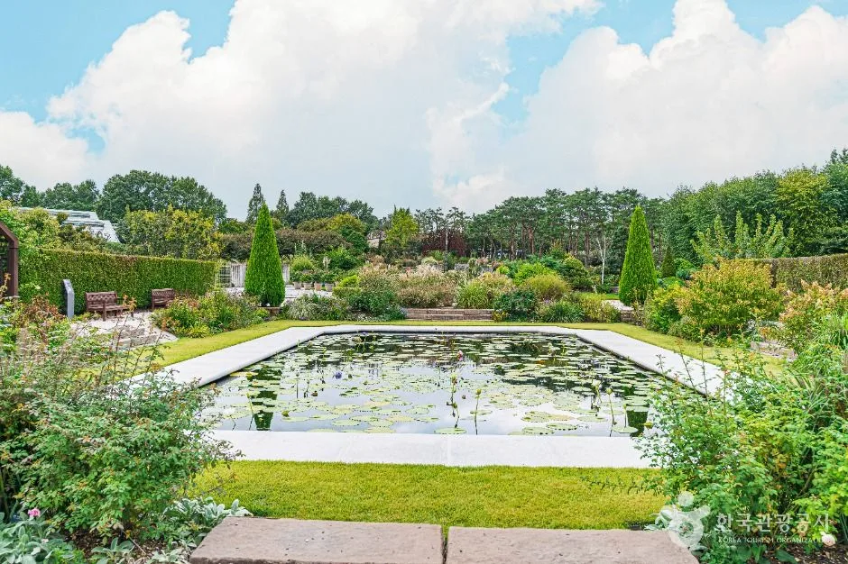
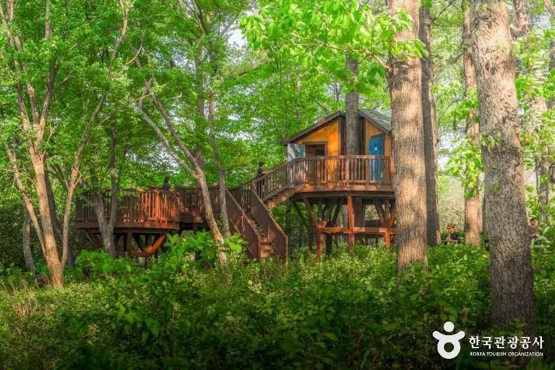
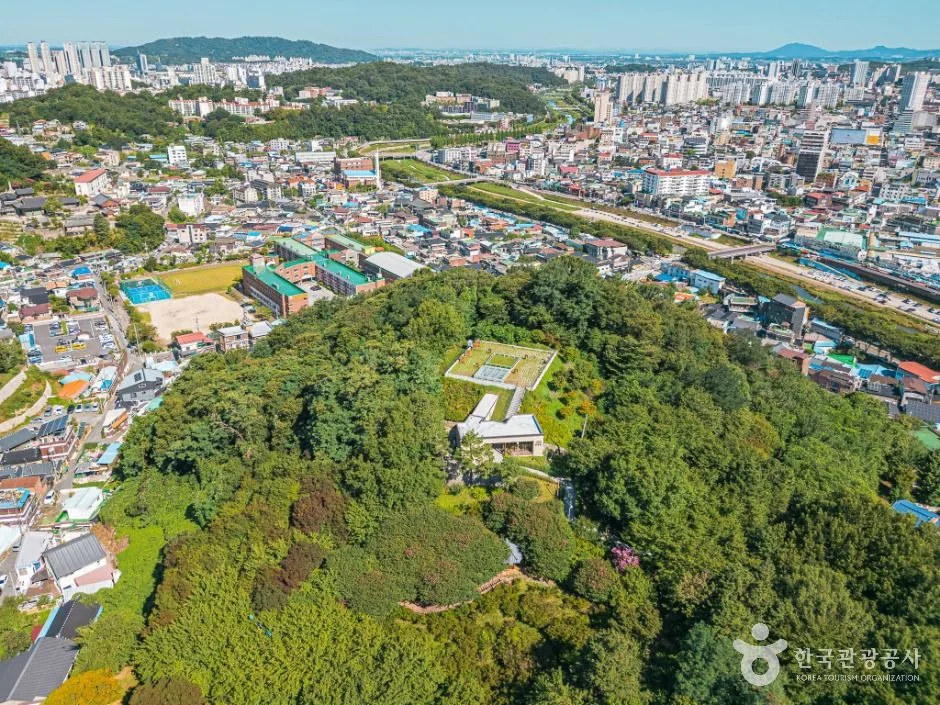
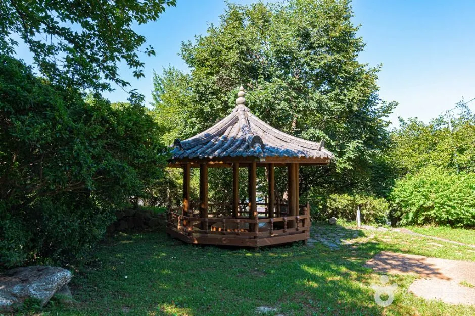
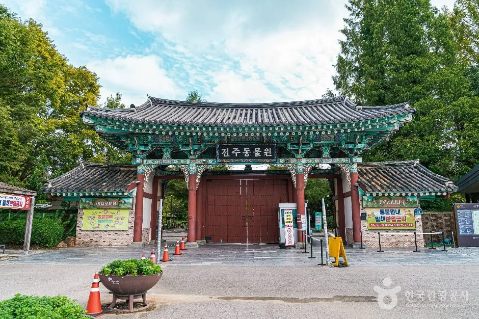
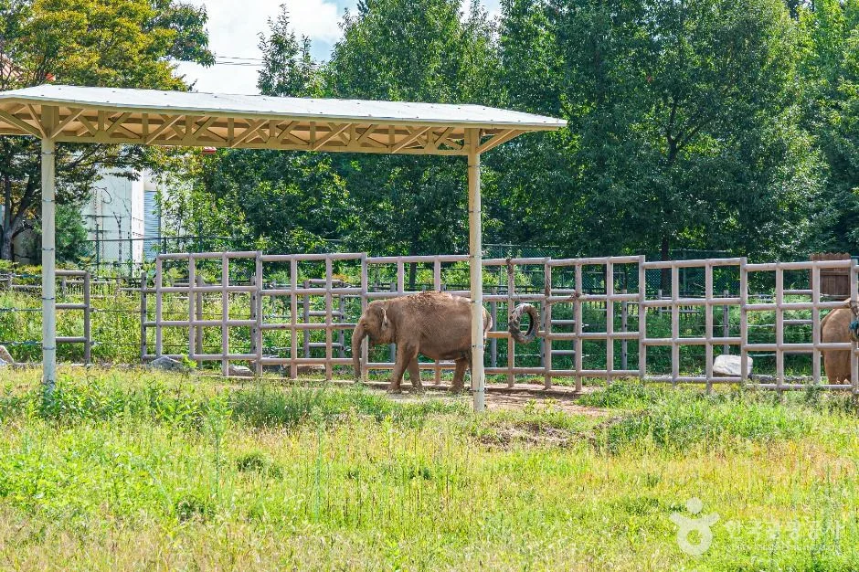

▲ 행사장인 전주대학교 캠퍼스 안 박물관 내부. 상시 시설 사진이며 이번 축제 현장이 아니다. 사진=한국관광공사(원본 비율 유지)
"로봇이 커피와 아이스크림을 직접 만들어 준다는데, 정말 무료일까?" 2026 대한민국과학축제 with 전북과학축전이 10월 16일(금)부터 18일(일)까지 사흘간 전주대학교 대운동장과 하림미션홀에서 열린다. 한국관광공사 행사 정보에는 이용요금이 "무료", 대상이 "전 연령"으로 적혀 있고, 부스는 80여 개 기관·대학·기업과 도내 초·중·고교가 꾸린다. 이 글은 아이와 함께 자차로 가는 가족이 알아야 할 일정, 프로그램, 주차를 공식 누리집과 한국관광공사 정보로 확인해 정리했다. 다만 2026년 셔틀버스와 사전예약 안내는 찾지 못했고, 누리집의 주차·오시는 길 페이지는 제목이 작년 회차로 남아 있어 그 점도 따로 표시했다.
1. 한눈에 보기 — 일정·장소·요금

▲ 2026 대한민국과학축제 with 전북과학축전 포스터. 2026.10.16.(금)~10.18.(일), 전주대학교 대운동장·하림미션홀 일원으로 표기돼 있다. 사진=한국관광공사(원본 비율 유지)
| 항목 | 내용 | 확인 상태 |
|---|---|---|
| 기간 | 2026년 10월 16일(금)~18일(일), 3일간 | 공식 누리집·한국관광공사·과기정통부 보도자료 일치 |
| 장소 | 전주대학교 대운동장(전시·무대), 하림미션홀(경연·교육). 주소 전주시 완산구 천잠로 303 | 공식 누리집·한국관광공사 일치 |
| 운영 시간 | 16일 13:00~17:00, 17일 10:00~17:00, 18일 10:00~15:00(대운동장 전시 행사) | 한국관광공사 행사 정보(프로그램 항목) |
| 입장료 | 무료 | 한국관광공사 행사 정보 |
| 대상 | 전 연령 | 한국관광공사 행사 정보 |
| 주제 | "움직이는 세상, 피지컬AI로 여는 새로운 미래!" | 한국관광공사 행사 정보 |
| 주최 | 과학기술정보통신부, 전북특별자치도, 전북특별자치도교육청 | 한국관광공사 행사 정보 |
| 주관 | 한국과학창의재단, 전북테크노파크, 전북과학문화거점센터 | 한국관광공사 행사 정보 |
| 문의 | 063-260-9332 | 한국관광공사 행사 정보 |
| 회차 표기 | 누리집 첫 화면은 "2026 제20회 전북과학축전" | 공식 누리집 |
ℹ️ 최종 안내는 공식 누리집에서
시간표, 부스표, 공지사항은 전북과학축전 공식 누리집에서 확인할 수 있다. 전북과학축전 누리집 바로가기
한 가지 헷갈리는 점이 있다. 누리집 푸터에는 완주군 봉동읍 완주산단6로 224(전북과학기술진흥센터) 주소가 찍혀 있는데, 이곳은 행사를 준비하는 기관의 주소로 보이고 행사장이 아니다. 같은 누리집의 오시는 길 페이지와 한국관광공사 정보가 행사장을 전주대학교로 못 박고 있으므로 내비게이션에는 "전주대학교 대운동장"을 넣으면 된다.
2. 어떤 축제인가 — 전국 4개 권역 중 가을에 열리는 마지막 행사
과학기술정보통신부가 4월 1일 낸 보도자료(정책브리핑 게재)에 따르면 올해 대한민국 과학축제는 30주년을 맞아 부산(4월 11~12일, 벡스코), 대전(4월 17~19일), 경기(4월 24~26일, 일산 킨텍스), 전북(10월 16~18일, 전주대학교) 네 곳으로 나뉘어 열린다. 앞의 세 곳은 이미 끝났고, 전북이 유일하게 10월에 열리는 행사다. 전북 행사는 한국과학창의재단이 주관하는 전국 행사에 전북의 지역 축전(전북과학축전)을 합친 형태로, 한국관광공사 정보는 국립과학관과 도외 연구기관, 대학이 참여한다고 소개한다.
| 구분 | 내용 | 장소 |
|---|---|---|
| 개막 사전행사·개막식 | 16일 13:00~14:00 개막 사전행사, 14:00~15:00 개막식. 전북과학기술인대상·학생과학발명대상 시상, 부스 투어(한국관광공사 정보는 14:00~15:00로 표기) | 대운동장 메인무대(사이언스 스테이지) |
| 전시·체험 | 피지컬AI관, 과학문화관, 과학기술관, 과학체험관 4개 관. 부스 총 80여 곳 | 전주대학교 대운동장 |
| 경연·교육 | 17일 2026 전북 피지컬 AI 미래인재 챌린지(경연대회), 18일 LEGO 피지컬AI 수업 레시피(교직원 대상 세미나) | 하림미션홀 |
| 무대 공연 | 버블쇼, AI 매직쇼, 골든벨, 솜사탕 쇼, 투석기 챌린지 등 | 사이언스 스테이지 |
참고로 작년 제19회 전북과학축전도 같은 전주대에서 10월 17~19일에 열려 100여 개 체험부스를 운영했다고 지역 매체(전북일보)가 전했다. 올해 부스 수는 한국관광공사 정보의 "80여 개"가 확인된 숫자이며, 작년보다 줄었는지는 공식 설명을 찾지 못해 단정하지 않는다.
3. 4개 관 부스 — 아이와 먼저 볼 곳
공식 누리집은 관별로 부스 번호, 운영 기관, 체험 내용을 표로 올려 두었다. 가족 단위로 인기가 몰릴 만한 체험을 골라 옮긴다.
| 부스 | 운영 기관 | 체험 내용 |
|---|---|---|
| A1 | 전북과학문화거점센터 | 로봇이 직접 만들어 주는 커피와 아이스크림 |
| A2 | 전북과학문화거점센터 | AI 로봇화가가 사진 속 얼굴을 분석해 초상화를 그려 주는 체험 |
| A3 | 전북과학문화거점센터 | 휴머노이드 로봇(유니트리 G1) 전시와 시연 |
| A4 | 핸즈온테크놀러지 | AI 포즈 인식을 활용한 레고 자동차 레이싱, 반도체 8대 공정 레고 전시 |
| A5 | 한국전자기술연구원 | 토마토 수확 AI 고소작업 로봇 모의 시연 |
| A6 | ㈜엠에이치소프트 | 로봇팔을 조작하며 AI 학습 데이터가 쌓이는 과정 확인 |
| A7 | 한국로봇융합연구원 | 재난·산업현장 안전 로봇 전시 |
| D1 | 전북과학문화거점센터 | 모션 인식으로 자세를 분석하고 맞춤 운동을 제안받는 AI 트레이너 |
| D3 | 전북과학문화거점센터 | AI 로봇 포토 스튜디오(사진 촬영·출력) |
| D6 | 전북과학문화거점센터 | 로봇을 조종하며 즐기는 슈팅·레이싱 미션 |
| 부스 | 운영 기관 | 체험 내용 |
|---|---|---|
| B1 | 전북대학교 생활과학교실 | AI 햄스터 코딩 로봇으로 사과 분류, LED 스마트팜 모형 만들기 |
| B4 | 국립목포대학교 | 태양광 자동차 만들기와 경주 |
| B9 | 전주기상지청 | 초코파이 기압 실험, 구름 발생 실험, 구름 키링 |
| B12·B13 | 국립과천과학관·국립광주과학관 | 이동형 과학전시품 Sci-POP, Sci-Kit으로 기초 과학 원리 체험 |
| B14 | BMW 코리아 미래재단 | 모바일주니어캠퍼스. 친환경 자동차 만들기 |
| B20 | 한국철도기술연구원 | 자기부상 열차 만들기로 하이퍼튜브 원리 체험 |
| B28·B29 | SW미래채움 전북센터 | 교육용 드론 장애물 경기, VR 체험 |
| B32 | 한국핵융합에너지연구원 | 플라즈마 시연과 선캐쳐 키링 만들기 |
| B35 | 전주대학교 앵커사업단 | 드론교실 체험(드론 비행·스포츠) |
| B36 | 한국건설기계연구원 | 건설장비 3D 입체 퍼즐 조립 |
| B37 | JBNU G-램프사업단 | 수소연료전지 동력장치 작동 체험 |
| B41 | 전주완산소방서 | 심폐소생술·하임리히·연기소화기·완강기 등 소방안전 체험 |
과학체험관(C 구역)은 군산·전주·남원·임실 등 도내 초·중·고교가 운영한다. 목록에는 자외선 카메라, 공기대포, 현무암 메모꽂이, 비뉴턴 유체 '우블렉', 클라드니 도형 키링, 솜사탕 만들기 같은 체험이 올라 있다. 부스별 정원·소요 시간·재료비 안내는 누리집에서 찾지 못했고, 한국관광공사 정보에도 체험 요금 항목은 없다. 재료비가 붙는 부스가 있는지는 확인하지 못했다.
스탬프 투어 — 로봇 커피 이용권이 경품
누리집 "스탬프 안내" 페이지에는 사이언스 발자국 투어가 올라 있다. 안내소 등에서 리플릿을 받아 서로 다른 부스 4곳을 체험하고 스탬프 4개를 모은 뒤, 리플릿 QR코드로 만족도 조사를 마치면 운영본부가 확인하고 경품을 추첨한다. 1인 1회만 참여할 수 있다. 경품은 로봇커피 이용권, 로봇아이스크림 이용권, 일반 아이스크림 중 추첨 결과에 따라 정해지고, 행사 당일 현장에서 받으며 수량이 떨어지면 일찍 끝날 수 있다고 한다. 즉 A1 부스의 로봇 커피·아이스크림을 맛보는 방법 중 하나가 이 투어로 보이며, A1 부스를 따로 이용하는 방식이나 비용은 공식 자료에서 확인하지 못했다. 중·고등학생은 도교육청 과학체험부스(C1~C45) 2곳과 그 밖의 부스 2곳을 체험하고 운영본부에서 서명을 받으면 창의적체험활동으로 인정받을 수 있는데, 사전 참가신청서를 낸 학생에 한한다. 이 페이지 상단도 "제19회" 표기가 남아 있어 올해 세부 내용이 바뀔 수 있다. 스탬프 안내 바로가기
4. 무대·경연 시간표 — 오후 3시 이후엔 뭐가 남나
| 시간 | 16일(금) | 17일(토) | 18일(일) |
|---|---|---|---|
| 10:00 | - | 레인보우 버블쇼 | 빙글빙글 솜사탕 쇼 |
| 11:00 | - | 사이언스 마이크(학생 과학 발표) | 사이언스 마이크 |
| 12:00 | - | 게릴라 이벤트 | 게릴라 이벤트(피지컬AI 스테이지) |
| 13:00 | 개막 사전행사 | 인공지능 매직쇼: 피지컬AI | 신나는 과학퍼포먼스 과학술사 |
| 14:00 | 개막식·VIP 행사장 투어 | KISTI의 과학향기 골든벨 | 슛! 투석기 명중 챌린지(14:00~14:40) |
| 15:00 | 스파게티면 탑 쌓기 챌린지 | 낙하산 에어로켓 실험실 | - |
| 16:00 | - | 게릴라 이벤트(16:00~17:00) | - |
하림미션홀의 피지컬AI 스테이지에서는 17일(토) 2026 전북 피지컬 AI 미래인재 챌린지가 열린다. 누리집 프로그램 안내는 시간을 09:30~17:00(한국관광공사 정보는 10:00~17:00)으로 적었고, 대상은 초등 3~6학년·중학 1~3학년이다. 로봇 이해, 센서 활용, 프로그래밍 기반 자율주행 미션을 겨루며, 참가는 초등부 30팀·중등부 10팀 총 40팀(2~3명 한 팀), 참가비는 무료라고 9월 28일 공지에 나와 있다. 시상은 초등부 교육감상 3팀·도지사상 3팀, 중등부 각 1팀이다. 접수 문의는 02-2608-2633이며, 신청 마감 여부는 확인하지 못했으므로 참가를 생각한다면 공지 첨부파일과 문의처로 먼저 확인하는 게 좋다. 18일 10시의 "화면을 넘어 교실로! LEGO와 함께하는 피지컬AI 수업 레시피"는 교직원 대상 세미나라 아이 체험 프로그램이 아니다. 관람만 한다면 신청은 필요 없는 것으로 보이나, 사전 등록 제도 유무는 확인하지 못했다. 사이언스 스테이지 일정표 바로가기
⚠ 일정이 어긋나는 부분
· 한국관광공사 정보는 18일 대운동장 전시를 15:00까지로 적었고, 10월 7일 재확인한 누리집 사이언스 스테이지 시간표도 14:40 투석기 챌린지로 끝난다. 18일 오후 시상 일정은 누리집 시간표에 없으며, 챌린지 시상 시각·장소도 공지에 나와 있지 않다. 시상식이 궁금한 가족은 현장 안내로 확인하자.
· 한국관광공사 정보의 하림미션홀 일정에는 18일이 "(금)"으로 잘못 적혀 있다. 18일은 일요일이다.
· 하림미션홀 시간도 어긋난다. 한국관광공사 정보는 17일 10:00~17:00, 누리집 챌린지 안내는 09:30~17:00이다.
· 한국관광공사 정보의 일반 "운영 시간"은 10:00~17:00 한 줄이지만 같은 정보의 프로그램 항목에는 16일 13:00 시작, 18일 15:00 종료로 나와 있다. 이 글은 프로그램 항목 기준으로 썼다.
5. 자차 이동·주차 — 누리집에 나온 것과 확인 못 한 것
▲ 전주대학교 박물관 내부. 상시 시설 사진이며 이번 축제 현장이 아니다. 행사장 대운동장은 같은 캠퍼스에 있다. 사진=한국관광공사(원본 비율 유지)
누리집의 오시는 길 페이지는 자가용 경로를 이렇게 안내한다. 남전주IC 방향은 "전주국립박물관"을 지나 육교 50m 전에서 좌회전하라고 적혀 있어, 박물관이 길목에 있는 셈이다. 호남고속도로에서는 서전주IC에서 전주대까지 5분, 전주IC 방향은 월드컵경기장에서 서부우회도로를 거쳐 20분, 남전주IC 방향은 15분, 서해안고속도로는 서김제IC에서 전주 방면으로 30분이라고 적혀 있다. 대중교통은 서울에서 고속버스 2시간 10분, 대전·광주에서 1시간이다.
| 구분 | 이름 | 비고 |
|---|---|---|
| 행사장 내 P1~P3 | 교수연구동 1·2·3 주차장 | 주소·수용 대수 표기 없음 |
| 행사장 내 P4 | 공학1관 후문 주차장 | - |
| 행사장 내 P5 | 노천극장 주차장 | - |
| 행사장 내 P6 | 스타센터 주차장 | - |
| 행사장 내 P7 | 벤처창업관 주차장 | - |
| 행사장 내 P8 | 인조잔디구장A 주차장 | - |
| 행사장 내 P9 | 학생회관 주차장 | - |
| 인근 공영 C1 | 농소마을 공영주차장 | 효자동3가 1712-10 |
| 인근 공영 C2 | 서부신시가지 전주대 원룸옆 공영주차장 | 효자동3가 1725-2(또는 1725-1) 부근 |
| 인근 공영 C3 | 서부신시가지 봉곡 공영주차장 | 효자동2가 1251-1(봉곡1길 42-4) |
여기서 주의할 점이 있다. 누리집에는 "주차 안내" 전용 페이지가 따로 있지만 목록이 위 표와 같고, 이 주차장 페이지와 오시는 길 페이지는 상단 제목이 "전 세대가 즐기는 제19회 전북특별자치도 과학축전"으로 남아 있다. 즉 작년 안내가 그대로 이어진 페이지일 가능성이 있고, 올해도 같은 주차장을 쓰는지는 공식 설명이 없다. 10월 6일 올라온 안내사항 공지는 "주차 시 발생하는 문제는 본 행사와 무관합니다"라고만 적었고 주차 요금이나 개방 시간은 밝히지 않았다. 셔틀버스 운행, 주차 요금, 만차 시 우회 안내는 2026년 자료에서 찾지 못했다. 개막일인 16일은 금요일 오후 시간대이고 17일은 토요일이라 도로가 혼잡할 수 있다고 추정하지만, 근거 있는 수치는 아니다.
| 항목 | 확인된 내용 | 못 찾은 내용 |
|---|---|---|
| 행사장 주소 | 전주시 완산구 천잠로 303 전주대학교 대운동장 | 정문·후문 중 어느 쪽이 가까운지 |
| 주차장 | 내부 9곳·인근 공영 3곳 목록(오시는 길·주차 안내 페이지, 모두 제19회 표기) | 2026년 적용 여부, 수용 대수, 요금 |
| 셔틀버스 | - | 운행 여부 |
| 입장·예약 | 한국관광공사 정보상 무료 | 사전예약·입장권 제도 유무 |
| 스탬프 투어 | 부스 4곳 스탬프로 경품 추첨 1인 1회(누리집 스탬프 안내) | A1 부스 별도 이용 방식·비용 |
| 현장 규칙 | 반려동물 출입 제한, 금연, 촬영물은 홍보에 사용될 수 있음(10/6 안내) | 유모차·휠체어 편의 안내 |
6. 가족 동선 짜기 — 개막일보다 토요일이 무난할까
시간표만 보면 17일 토요일이 가장 알차다. 대운동장 전시는 10시부터 17시까지 열리고, 무대는 10시 버블쇼, 13시 AI 매직쇼, 14시 골든벨, 15시 에어로켓 실험, 16시 게릴라 이벤트로 이어진다. 16일 금요일은 13시에 문을 열어 오후 짧은 시간만 쓸 수 있다. 18일 일요일은 15시에 전시가 끝나는 것으로 안내돼 있어 오전 중심으로 움직이는 편이 낫다. 다만 어느 날 사람이 몰리는지는 공식 자료가 없고, 위 판단은 시간표 기반의 추정이다.
| 날짜 | 전시 운영 | 눈에 띄는 프로그램 | 메모 |
|---|---|---|---|
| 16일(금) | 13:00~17:00 | 개막식(14시), 스파게티면 탑 쌓기(15시) | 하교 후 방문하기 좋은 짧은 일정 |
| 17일(토) | 10:00~17:00 | 매직쇼, 골든벨, 에어로켓, 피지컬 AI 챌린지(하림미션홀) | 하루 종일 머물 수 있는 날 |
| 18일(일) | 10:00~15:00 | 솜사탕 쇼, 과학술사, 투석기 챌린지 | 오후 시상 일정은 누리집 시간표에 없음 |
대운동장은 야외 행사장이라 비가 오는 날은 불편할 수 있다. 우천 시 운영 방식은 공식 자료에서 찾지 못했다. 반려동물은 행사장 출입이 제한되므로 반려견과 함께 전주로 오는 가족은 맡길 곳을 미리 정해야 한다.
7. 축제 전후 들를 만한 곳 — 한국관광공사 정보로 확인한 시설
한옥마을 쪽 동선은 전주한옥마을 무료주차장 기사와 전주 국가유산 야행 기사, 덕진공원은 전주비빔밥축제 기사에 정리했으므로 여기서는 다루지 않았다. 아래는 한국관광공사 정보에서 운영 시간이 확인되는 네 곳이다. 행사장에서의 거리와 소요 시간은 확인하지 못했으니 지도 앱으로 재보는 것을 권한다.

▲ 국립전주박물관 전시실의 석등. 상시 전시 사진이며 이번 축제와 무관하다. 사진=한국관광공사

▲ 국립전주박물관 전시실의 금동 불상. 상시 전시 사진이며 이번 축제와 무관하다. 사진=한국관광공사

▲ 한국도로공사 전주수목원의 정원 입구. 상시 풍경이며 이번 축제 현장이 아니다. 사진=한국관광공사

▲ 전주수목원의 연못 정원. 상시 풍경이며 이번 축제 현장이 아니다. 사진=한국관광공사

▲ 전주수목원 숲 속의 목조 나무집과 데크. 상시 풍경이며 이번 축제 현장이 아니다. 사진=한국관광공사
| 장소 | 운영 시간 | 휴무·요금·주차 | 문의 |
|---|---|---|---|
| 국립전주박물관(완산구 쑥고개로 249) | 상설전시실 10:00~18:00(입장 마감 17:30), 어린이박물관 10:00~17:30 | 1월 1일·설·추석 당일 휴관. 이용료 무료(특별기획전시는 유료일 수 있음), 주차 무료 | 063-233-5651~2 |
| 한국도로공사 전주수목원(덕진구 번영로 462-45) | 09:00~18:00(입장 마감 17:00) | 매주 월요일·설·추석 당일 휴원. 주차 가능. 입장료 무료(한국관광공사 정보) | 063-714-7200 |
| 전주동물원(덕진구 소리로 68) | 3~10월 09:00~19:00(입장 마감 18:00), 11~2월 09:00~18:00(마감 17:00) | 연중무휴, 카드 결제 가능. 입장료 일반 3,000원·청소년·군인 2,000원·어린이 1,000원(영유아·65세 이상·장애인 등 무료, 증빙 필요), 승용차 주차 1,500원 | 063-281-6759 |
| 완산공원(완산구 동완산동) | 상시 개방 | 연중무휴, 주차 가능 | 063-220-5438 |

▲ 완산공원 일대와 전주 시가지를 내려다본 항공 사진. 상시 풍경이며 이번 축제 현장이 아니다. 사진=한국관광공사

▲ 완산공원(완산칠봉) 숲길의 정자. 상시 풍경이며 이번 축제 현장이 아니다. 사진=한국관광공사

▲ 전주동물원 정문. 상시 풍경이며 이번 축제 현장이 아니다. 사진=한국관광공사

▲ 전주동물원의 코끼리. 상시 풍경이며 이번 축제 현장이 아니다. 사진=한국관광공사
가족 나들이라면 오전에 과학축전을 보고 오후에 동물원이나 박물관을 붙이는 구성을 떠올릴 수 있지만, 박물관은 입장 마감이 17시 30분이라 늦게 출발하면 시간이 빠듯하다. 수목원 휴원일인 월요일은 이번 축제 기간(금~일)과 겹치지 않는다.
✅ 출발 전 체크리스트
· 10/16(금) 13시~17시, 10/17(토) 10시~17시, 10/18(일) 10시~15시, 전주대학교 대운동장·하림미션홀, 입장 무료(한국관광공사 정보)
· 내비게이션 목적지는 "전주대학교 대운동장"(완주군 봉동읍 주소는 준비 기관 주소로 보임)
· 셔틀·주차 요금·사전예약은 2026년 자료에서 미확인. 누리집 주차장 페이지는 제19회 표기라 출발 전 공지사항 재확인
· 스탬프 4개를 모으면 로봇커피·아이스크림 이용권 등 경품 추첨(1인 1회, 소진 시 마감)
· 반려동물 출입 제한, 금연, 대기 줄 통행 방해 금지
· 문의 063-260-9332
8. 정리
2026 대한민국과학축제 with 전북과학축전은 10월 16~18일 전주대학교 대운동장과 하림미션홀에서 열리며, 한국관광공사 정보상 입장은 무료, 부스는 80여 곳이다. 피지컬AI관의 로봇 커피·아이스크림, AI 로봇화가, 휴머노이드 시연을 비롯해 과학기술관 연구기관 체험, 도내 학교의 체험관, 사이언스 스테이지 공연이 이어진다. 시간표상 하루를 통째로 쓰기 좋은 날은 17일 토요일이다.
자차로 가면 누리집에 행사장 내 주차장 9곳과 인근 공영주차장 3곳이 올라 있지만 해당 페이지가 제19회 표기라 올해 적용 여부는 확인하지 못했고, 셔틀과 사전예약 정보도 찾지 못했다. 하림미션홀 시간이나 18일 시상 여부처럼 자료끼리 어긋나거나 빠진 부분이 있으므로 출발 전에 공식 누리집 공지사항을 한 번 더 보자.